For everyone on the team: the people who do the work, and the team leads who check it.
www.domebox.in · help: info@biscsindia.com
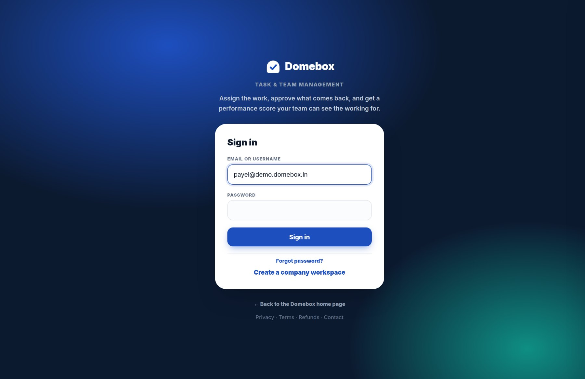
Forgot your password? Press Forgot password? next to the password box. We email you a link. It works once and only for one hour.
Everyone has one of three roles. Your role is written under your name, top right.
A Doer only sees work that touches them: given to them, raised by them, waiting on them, or offered to them.
| Tab | What it is for |
|---|---|
| Tasks | Your board — every task, in columns by where it stands. |
| Priority | One list: what to do first, and why. |
| Projects | Big jobs done in stages, one after another. |
| Meetings | The weekly review meeting. |
| Goals | Company purpose, values, goals and key numbers. |
| Leaderboard | Who is on top this month. |
| Reports | Scores and trends (team leads). |
| Team | The people and who reports to whom. |
The tabs run in the order you use them: your work first, then the weekly meeting and the company’s goals, then the leaderboard, then the tabs for team leads.
Next to the tabs: the bell (your notifications), the sparkle (ask questions about the numbers, where your plan includes it), the ? (help) and your name (your account).
Press the ? key, or the ? button in the top bar. Help opens on the page for the tab you are on. Type in the search box to find anything.
The User manual (PDF) button under the list downloads this book.
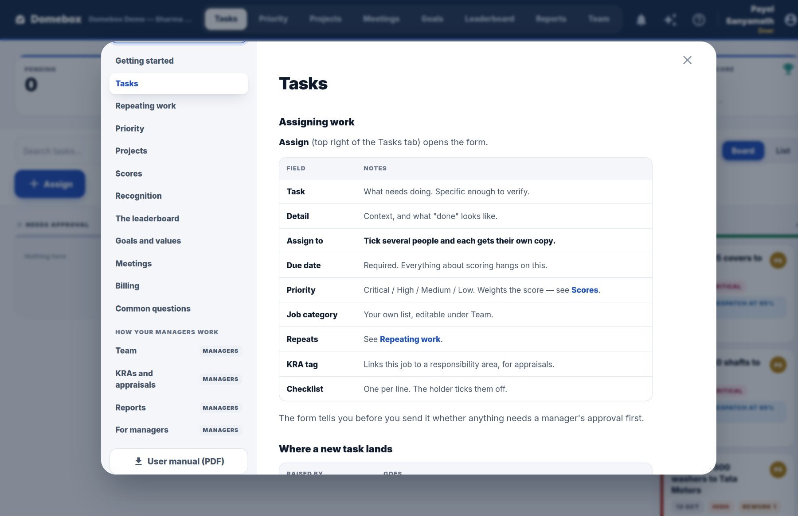
Domebox works in the phone's browser — no app to install. The tabs move into a bar at the bottom. Help is in your account panel.
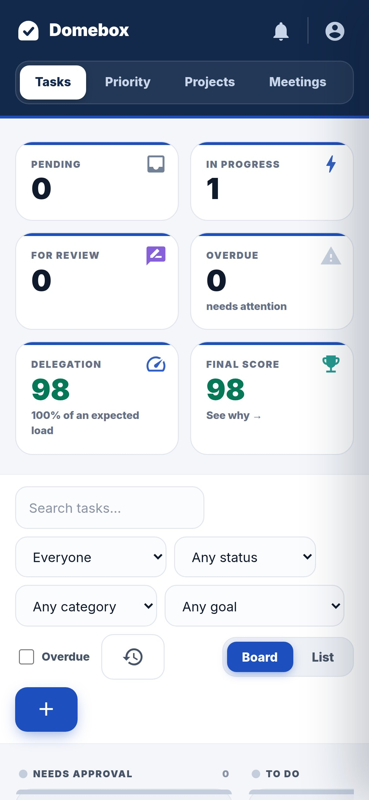
The Tasks tab is where you spend most of your day. It has two parts.
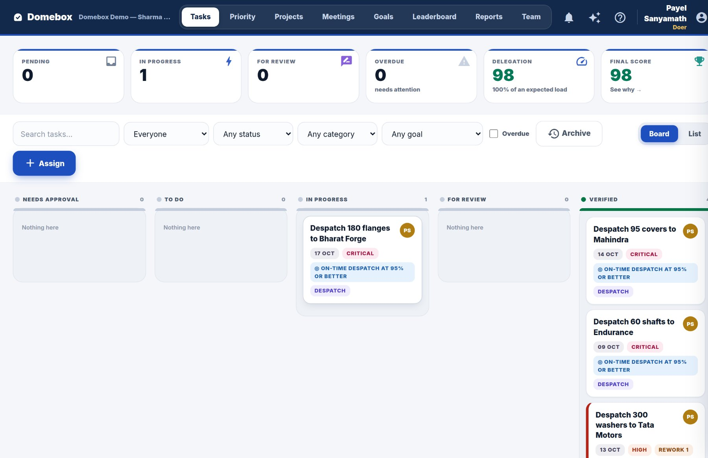
| Column | Means |
|---|---|
| Needs approval | Someone asked for this work. A manager must say yes first. |
| To do | Accepted. Not started yet. |
| In progress | Being worked on. |
| For review | Handed in. Waiting for someone to check it. |
| Verified | Checked and closed. Well done. |
A red line on the left of a card means it is late or close to late. Small tags on a card show the due date, the priority, the category, a goal it serves, and REWORK 1 if it was sent back once.
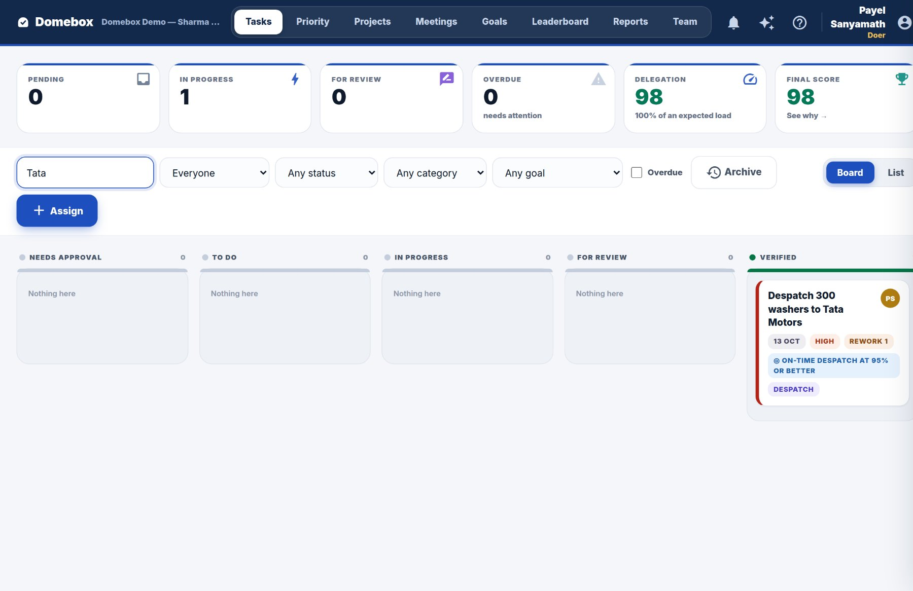
Each column shows its 20 most urgent cards — late ones first, then the nearest due date. Press Show all at the bottom of the column to see the rest, and Show fewer to fold it again. The number at the top of a column always counts every card.
A closed task leaves the board 7 days after it closed, so the board stays about live work. It is not lost. Press Archive to see closed work, newest first, 50 at a time. Press Load 50 more at the bottom for older ones. Search and filters work on the whole archive.
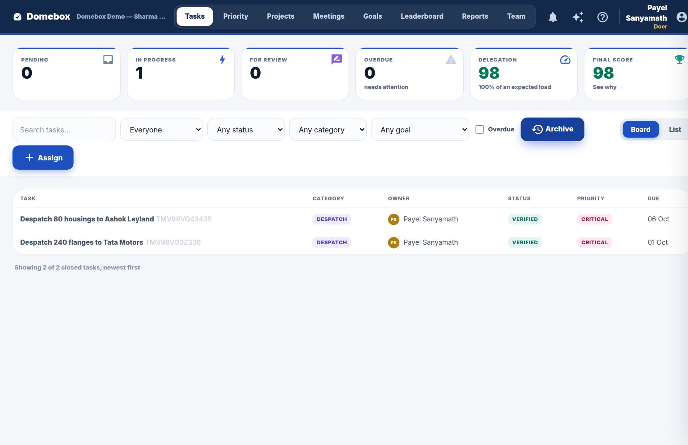
Click any card. A panel opens on the right with everything about that task.
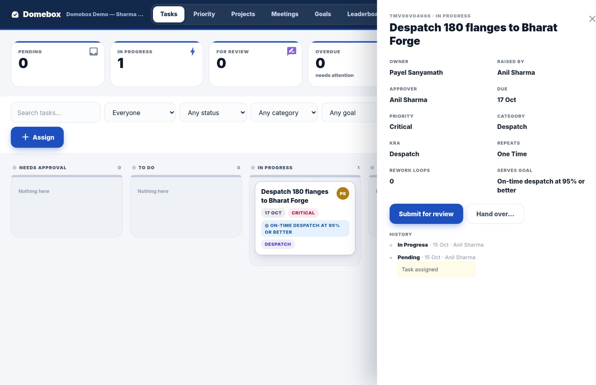
If the checker is not happy, they send it back. It returns to In progress with a new deadline and a note saying what to fix. That is called a rework loop.
| Button | When to press it |
|---|---|
| Start work | When you begin. The card moves to In progress. |
| Submit for review | When it is done. Add a short note: what you did, where the proof is. Your on-time score is counted from this moment, not from when somebody gets round to checking it. |
| Hand over | When someone else should do it. Pick the person and give a reason. Your manager decides — the task does not just vanish from your list. |
| Add blocker | When you cannot start until another task is done. This task then says Blocked by… until that one closes. |
Some tasks come with a checklist. Tick each line as you finish it. The card shows how many are done, like 3/5. You can still hand in with lines unticked — it is a reminder, not a lock.
At the bottom of every task is its full history: every change, who made it, when, and their note. If you ever think a score is wrong, the history is your proof.
Press + Assign on the Tasks tab. Fill in the form.
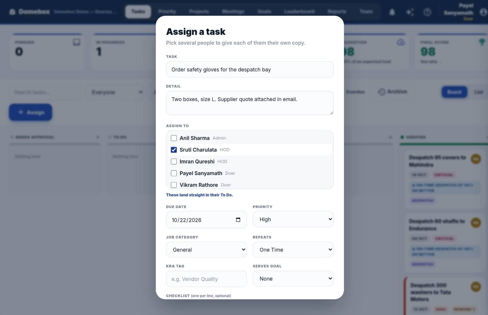
| Box | What to write |
|---|---|
| Task | What needs doing. Clear enough that anyone could check it is done. |
| Detail | Extra facts, and what “done” looks like. |
| Assign to | Tick one person or several. Each person gets their own copy. |
| Due date | Must be filled. Scores depend on it. |
| Priority | Critical, High, Medium or Low. Important work counts for more. |
| Job category | The kind of work, e.g. Despatch, Quality. |
| Serves goal | The company goal this task helps (optional). |
| Repeats | For work that happens again and again — see chapter 5. |
| Checklist | One step per line (optional). |
Before you send, the form tells you whether a manager must approve it first.
| Who gave it | What happens |
|---|---|
| Your own manager, or an Admin | Lands straight on your board. |
| You, for yourself | Lands straight on your board. |
| A Doer asking their manager for help | The manager accepts or declines it themselves. |
| Anyone else | Goes to Needs approval. The person's manager says yes or no. |
For work that comes back on a schedule — a daily stock count, a weekly report, a monthly calibration.
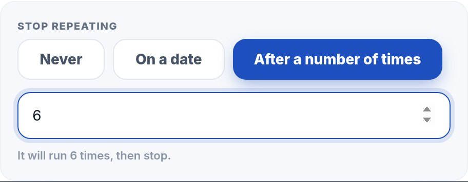
| Stop repeating | Means |
|---|---|
| Never | Keeps going until someone stops it. |
| On a date | No new copy after that date. |
| After a number of times | Stops after that many copies. |
Each new copy appears on time, even if the last one has not been checked yet. The card shows how far along it is, like Monthly · 3 of 6.
Monthly work set for the 31st lands on the last day of shorter months (28th or 30th) instead of slipping into the next month.
To end a series early, open any copy and press Stop repeating.
The Priority tab answers one question: what should I do next? It puts all your open work in one list, most pressing on top, and every line says why it is there.
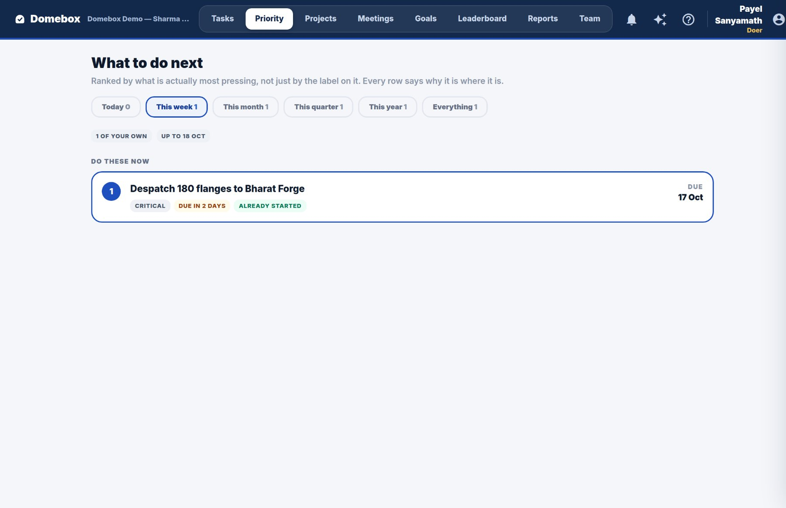
What pushes a task up the list:
Use the horizon buttons — Today, This week, This month, This quarter, This year, Everything — to look further ahead. Late work shows in every horizon, even Today.
Below the main list:
A project is a big job done in stages, one after another — an audit, a new-part approval, a machine install. Each stage has its own owner and its own deadline.
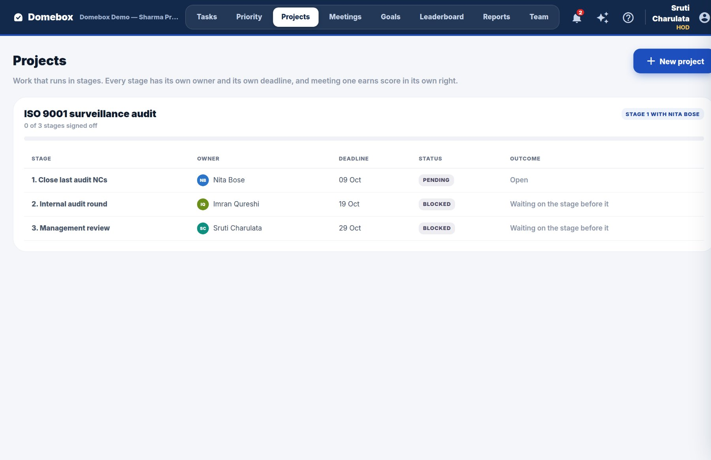
To start one: Projects → New project. Give it a name, then add at least two stages — title, owner, deadline and priority for each.
Your score is between 0 and 100. Click See why on the Final score box to see exactly how it was worked out, task by task. There are no hidden marks.
It is this month's score: the work you closed this month and what you are still holding. The leaderboard, Reports and your appraisal all use the same number. Until you close something in the month it says no data yet — that is not a zero.
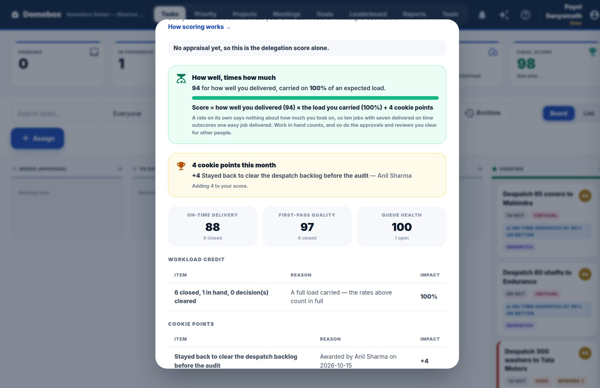
| Part | Share | The question it asks |
|---|---|---|
| On time | 45% | Did you hand it in by the due date? |
| First-time right | 30% | Was it accepted without being sent back? |
| Nothing left late | 25% | Is any work you are still holding overdue? |
On a project, a part of the score also comes from meeting each stage's deadline.
Someone who does one easy task on time should not beat someone who carries ten and delivers seven on time. So the score also looks at how much work you carried compared with what is normal for your job. Ten jobs with seven on time scores far higher than one easy job.
If you had very little work in a month, the score is marked provisional — too little to judge, not a bad mark.
| Band | Score | Means |
|---|---|---|
| A | 85 and above | Top performer |
| B | 60 to 84 | Solid, can get sharper |
| C | below 60 | Needs help |
The Leaderboard tab ranks the team from top to bottom for a week, month, quarter or year. It uses the same score as your dashboard. ▲ and ▼ show movement since last time.
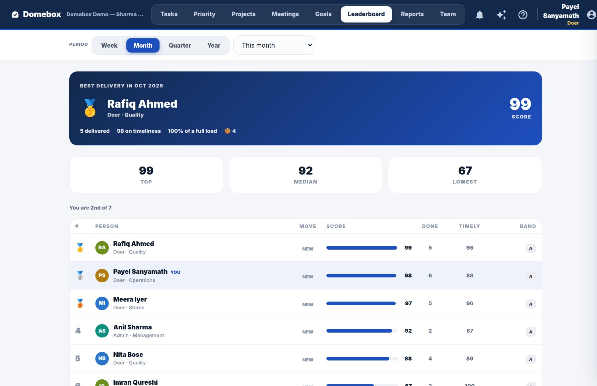
Your company decides who sees the whole table. You always see your own place.
Some good work does not show in a score: staying late to clear a backlog, catching a mistake nobody saw, helping a colleague finish. Managers can thank you for it with cookie points.
The Goals tab shows where the company is going and how it wants to get there.
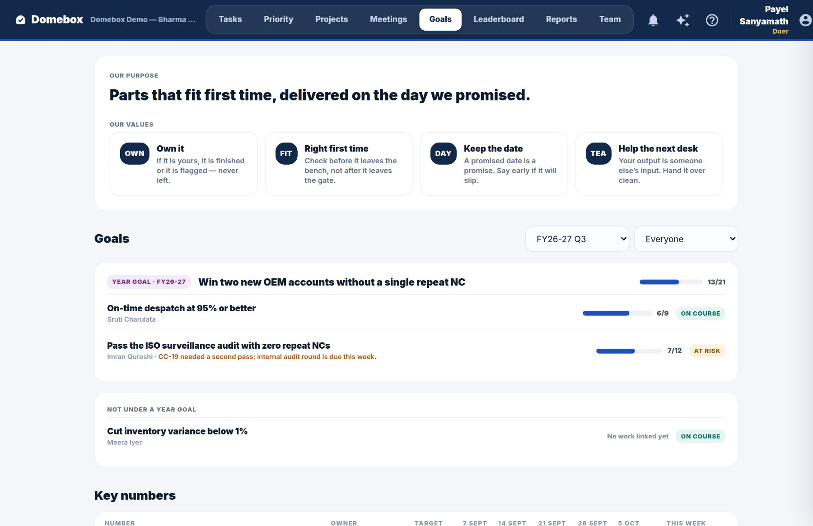
The bar shows how much of the work linked to the goal has been verified — for example 6/9. To link your task to a goal, choose it under Serves goal when you assign the task.
| Status | Means |
|---|---|
| On course | Will be done in time. |
| At risk | Might not be. You must write one line saying why. |
| Done | Finished. |
| Dropped | No longer being chased. |
If you own a goal, you can change its status yourself — the person closest to the work knows first when it is at risk.
Further down are the few weekly numbers that say if the week went well — despatches, rejections, collections. Each has an owner and a target. If you own one, enter this week's figure. A miss shows in red and should be raised as a roadblock in the weekly meeting.
The Meetings tab runs your weekly review. One person — usually a manager — chairs it. Everyone else opens the same meeting on their own screen, and it follows the chair by itself.
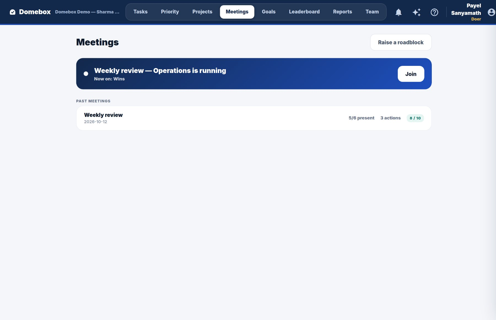
| Part | What happens |
|---|---|
| 1 · Wins | Who is here, and one good thing each — from work or home. |
| 2 · Values in action | A short story of someone living one of the company values. It must name the value. |
| 3 · Goal check | Each quarter goal: on course, at risk or done. No discussion here. |
| 4 · Key numbers | This week's figures against their targets. |
| 5 · Updates | Anything everyone should know. One line each. |
| 6 · Roadblocks | Problems and chances, solved one at a time. |
| 7 · Actions | Last week's actions — done or not? This week's: who, what, by when. |
| 8 · Close | Everyone rates the meeting from 1 to 10. |
A clock shows how long each part is taking. It turns red when a part runs over.
Type in the box and press Share. Your point appears for everyone straight away.
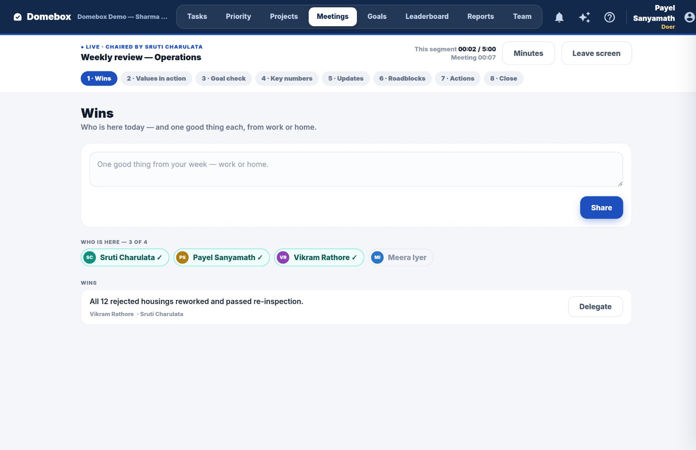
Raise a problem in part 6. It stays on the list from one week to the next until someone clears it. You can also raise one between meetings: Meetings → Raise a roadblock.
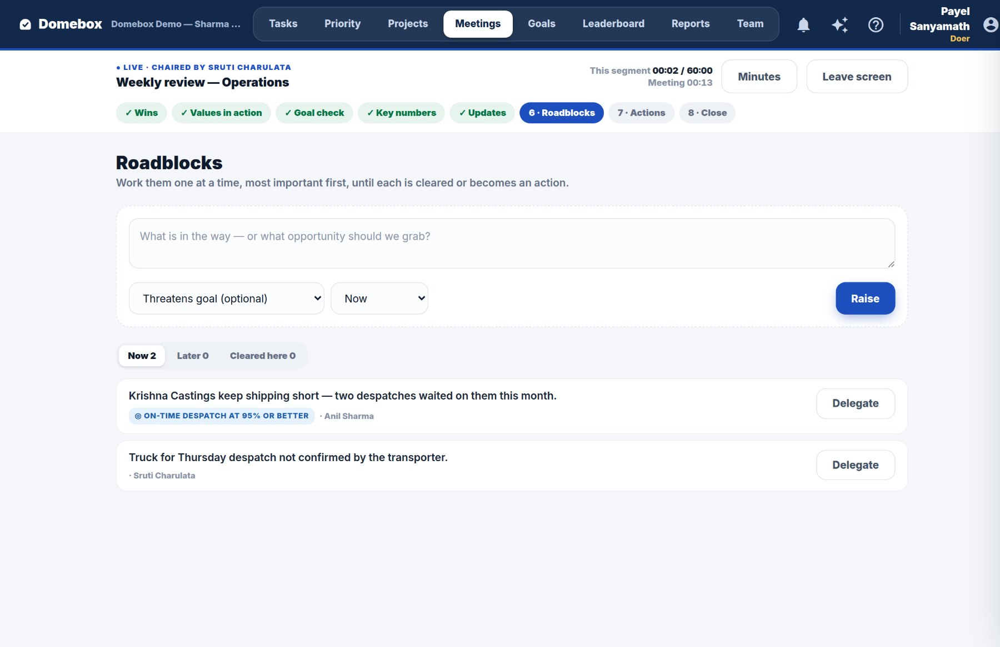
Every point in the meeting has a Delegate button. Press it, write what will be done, tick who (one person or several), and set the due date. Each person gets a real task on their board, with reminders, and it counts in their score. The point then shows who it went to and how far it has got, so nobody hands out the same job twice. Next week's meeting opens with every open action on the list.
Press a number from 1 to 10. If you give less than 8, say why. Ratings are anonymous: everyone sees how many have rated, nobody sees who gave what.
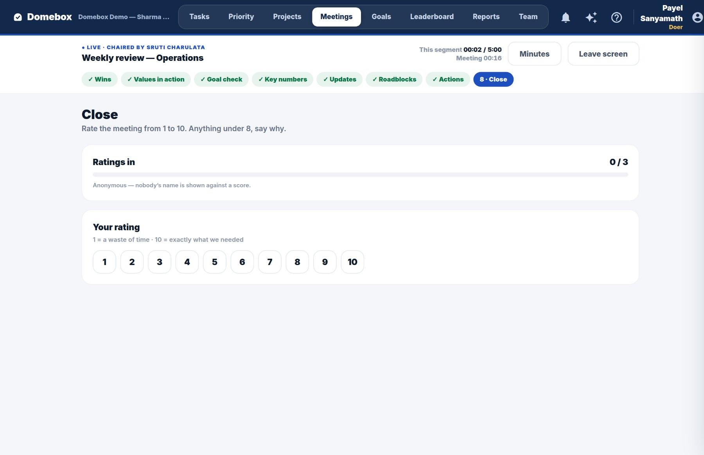
When the chair ends the meeting, everyone who was there gets a summary by email, with their own actions at the top.
Press Leave screen to go back to your other work; you can come back while the meeting is live.
The bell at the top shows a red number when something new needs you: a task given to you, a task sent back, a request for approval, cookie points, and so on. Click it to see the list; click a line to open that task.
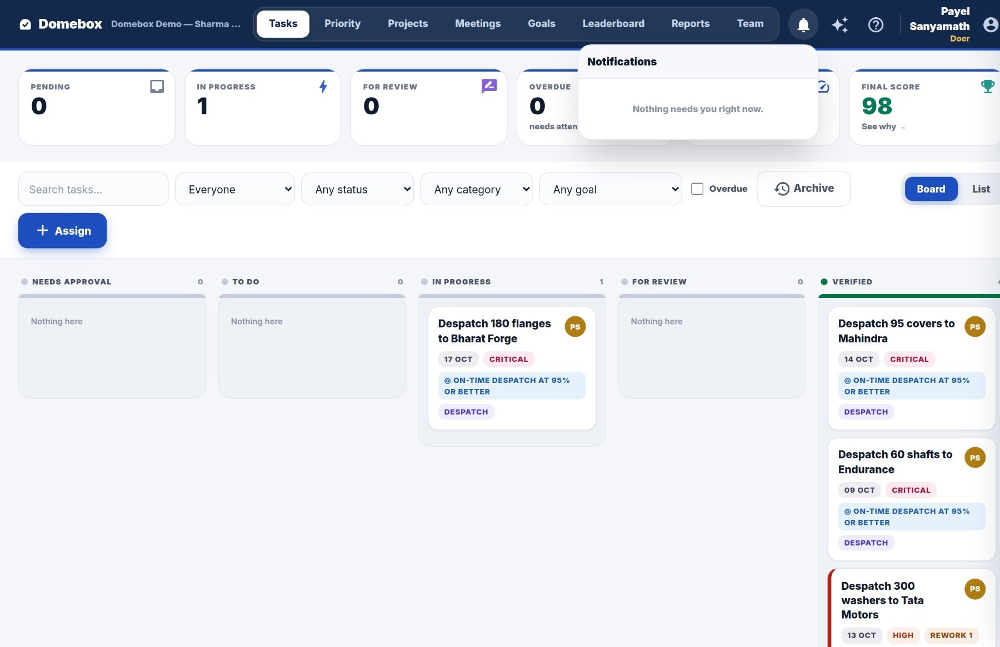
Domebox emails you about your open tasks (To do or In progress) at 9 am, 3 pm and 5 pm, most urgent first:
Hand the task in and the reminders stop. Nothing is sent about work waiting for review or approval, about closed work, or while you are on approved leave. On a day with nothing to say, nothing is sent at all.
If other people are waiting on your decision — an approval or a check — you also get one short email each morning listing them.
As a team lead, your board also shows your team's work. Work waiting on you sits in Needs approval and For review.
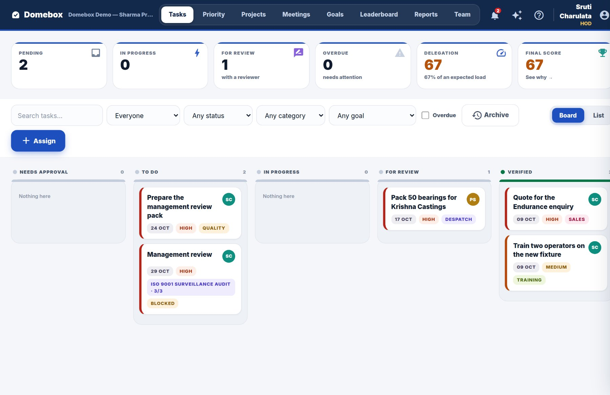
A card in Needs approval is someone asking for your person's time. Open it and press Approve to put it on their board, or Reject with a reason.
Open a card in For review. Read the note and look at the proof.
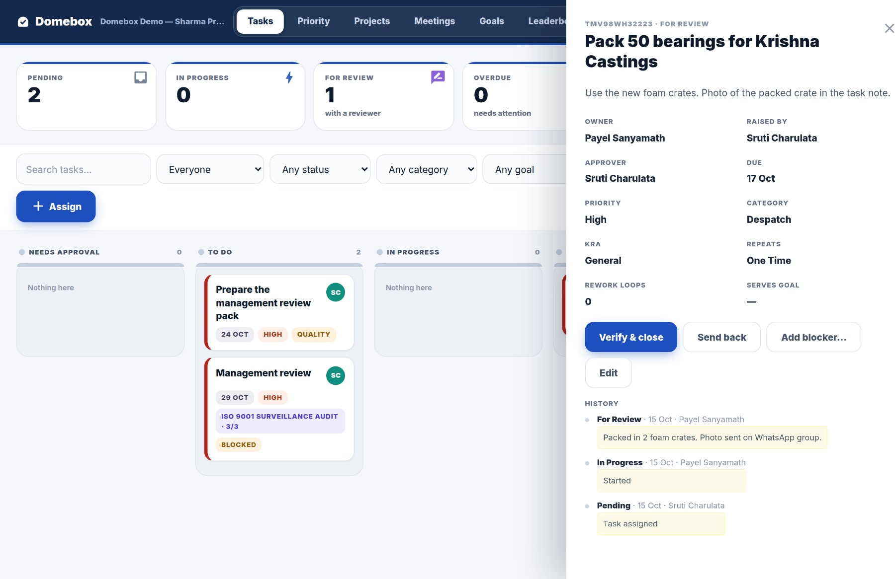
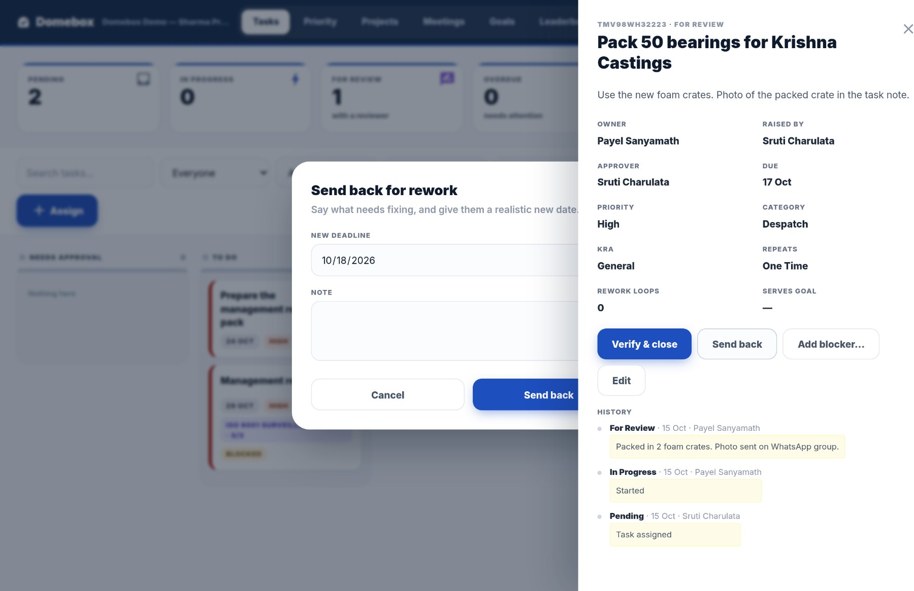
Open the cookie panel, pick the person, give 1 to 5 points and write why. They get an email.
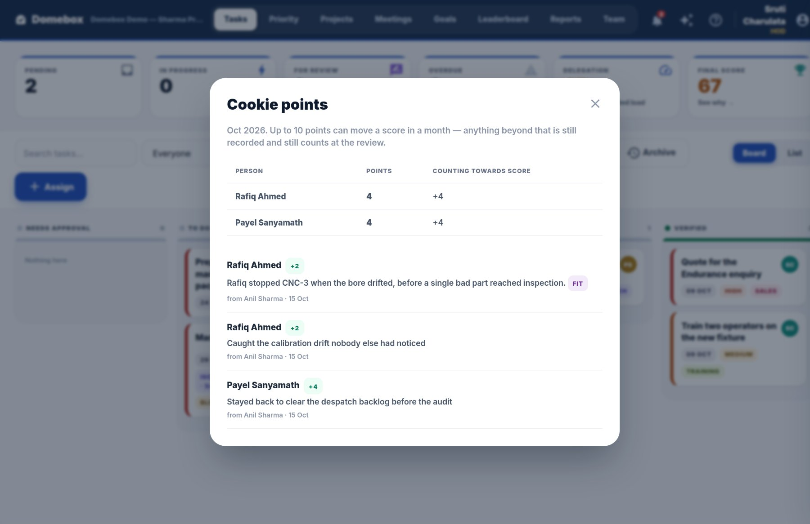
The Reports tab shows your team for a week, month, quarter or year: the team score, work delivered, the on-time share, rework loops and late work, the trend over twelve periods, how many people sit in each band, and each person's score.
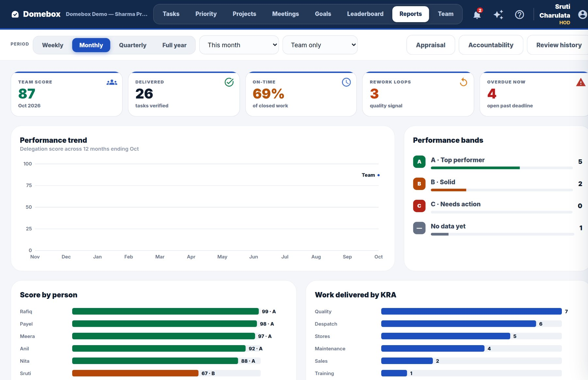
Accountability shows rework by person and who is holding work up. Review history lists past appraisals.
Reports → Appraisal. Pick the person. Rate each responsibility area (KRA) and each behaviour from 0 to 5, add up to 5 bonus points if deserved, and write your remarks.
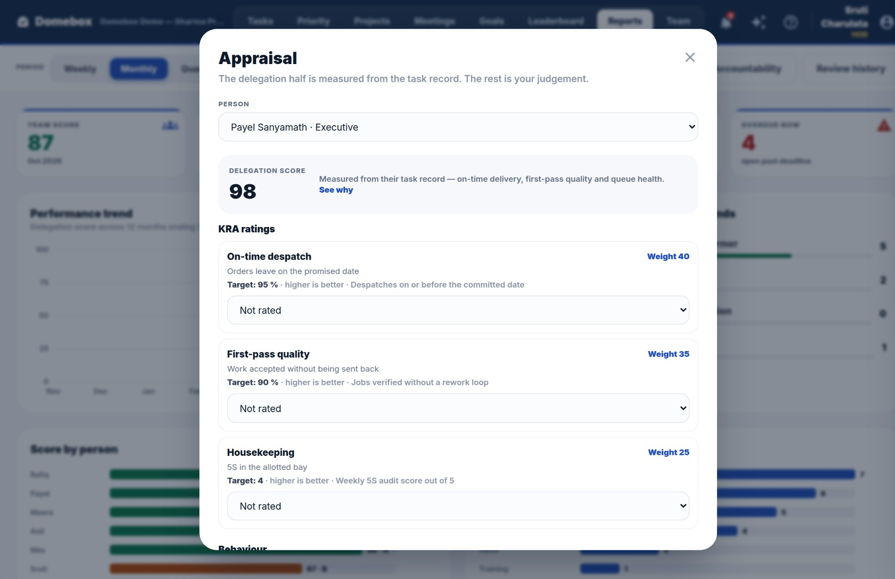
The final appraisal score is half your ratings and half the person's score from their task record. A new joiner with no closed work is judged only on your ratings — a new joiner is not a poor performer.
That is on purpose. Ask your manager to assign it, or raise it to them. If a task you hold should go to a colleague, use Hand over.
Why can I not close my own task?A job nobody checked is not really closed. Someone else signs it off.
My task disappeared from the board.Closed work leaves the board 7 days after it closed. Press Archive to find it.
My due date was changed, but it still says late.Only a change made inside the task counts. Ask the person who gave it to change the due date in the task, with the reason.
I was on leave and it still says I was late.Your leave must be recorded in Domebox. Ask your manager to add it.
I am not on the leaderboard.You closed no work in that period, so you are listed under Not ranked. That is not last place.
A task says “Blocked”. What do I do?Open it to see which task it is waiting on. You can start when that one is verified. If it is stuck, raise it with your manager or as a roadblock in the weekly meeting.
I am not getting any emails.Look in Spam for mail from info@biscsindia.com. Still nothing? Tell your Admin.
I forgot my password.Press Forgot password? on the sign-in screen. The email link works once, for one hour.